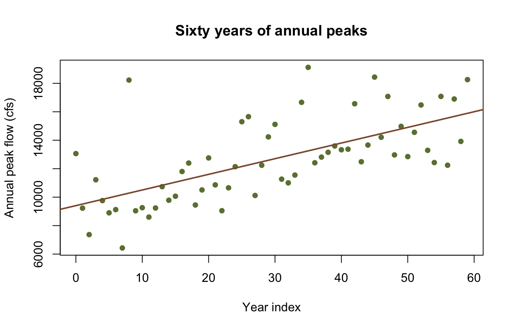
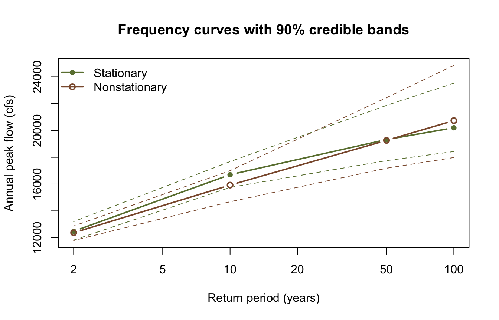

library(corehydror)24. Nonstationary frequency analysis
A frequency analysis assumes the record is a sample from one fixed distribution. Land use changes, reservoirs are built, and the climate that produces the storms is not the one that produced them fifty years ago. When the assumption fails, the honest response is to let a distribution parameter vary with time and see whether the data supports it.
This example attaches a linear trend to the location parameter of a GEV distribution with trend(), fits stationary and nonstationary versions of the same record, and compares them. It has no upstream counterpart: the USACE-RMC Numerics-Python-Examples repository has no nonstationary example.
What you’ll learn
- Attach a trend to one distribution parameter and see how it reshapes the parameter vector.
- Fit stationary and nonstationary models of the same record.
- Compare them on AIC, BIC, and DIC, and read what each one is telling you.
Setup
A record with a rising mean
Sixty years of annual peaks, drawn from a GEV whose location rises by 120 cfs a year. The draws come from the package’s own seeded generator, so the series is reproducible in either language.
noise <- dist_random(distribution("GeneralizedExtremeValue", c(0, 1, 0.05)), 60,
seed = 20250811)
peaks <- round(8000 + 120 * (seq_len(60) - 1) + 1800 * noise)
cat(sprintf(
"first 20 years: %s cfs mean\n last 20 years: %s cfs mean\n",
format(round(mean(head(peaks, 20))), big.mark = ","),
format(round(mean(tail(peaks, 20))), big.mark = ",")
))first 20 years: 10,210 cfs mean
last 20 years: 14,754 cfs meanplot(seq_along(peaks) - 1, peaks,
pch = 16, col = "#6b7f3f",
xlab = "Year index", ylab = "Annual peak flow (cfs)",
main = "Sixty years of annual peaks"
)
abline(lm(peaks ~ I(seq_along(peaks) - 1)), col = "#8c5a3b", lwd = 2)
Attaching a trend
trend() names the parameter to vary and the shape of the variation. The parameter can be named ("location", or the library’s ξ) or given as a 1-based position.
stationary <- model_univariate("GeneralizedExtremeValue", peaks)
nonstationary <- model_univariate("GeneralizedExtremeValue", peaks,
trends = trend("location", "Linear"))
nonstationary<corehydro_model> univariate_distribution: GeneralizedExtremeValue
data: 60 exact observations
trends: Linear on parameter 1A trend replaces its parameter with the trend’s own coefficients, so the vector grows. The GEV’s three parameters become four: the location splits into an intercept and a slope, and the scale and shape are unchanged.
cat("stationary: ", paste(round(model_parameters(stationary)$values, 4), collapse = ", "),
"\n")stationary: 11433.4018, 2780.934, 0.1617 cat("nonstationary:", paste(round(model_log_likelihood(nonstationary)$parameters, 4),
collapse = ", "), "\n")nonstationary: 11433.4018, 0, 2780.934, 0.1617 The slope starts at zero, which is what makes the comparison fair: the nonstationary model begins at the stationary fit and has to earn the extra parameter.
Fit both
aeps <- c(0.01, 0.02, 0.1, 0.5)
fit_st <- univariate_analysis(
stationary,
sampler = "DEMCzs", iterations = 1500, output_length = 2000,
seed = 20250811, thinning_interval = 1, exceedance_probabilities = aeps
)
fit_ns <- univariate_analysis(
nonstationary,
sampler = "DEMCzs", iterations = 1500, output_length = 2000,
seed = 20250811, thinning_interval = 1, exceedance_probabilities = aeps
)
gof <- data.frame(
Model = c("Stationary", "Nonstationary"),
AIC = c(fit_st$aic, fit_ns$aic),
BIC = c(fit_st$bic, fit_ns$bic),
DIC = c(fit_st$dic, fit_ns$dic)
)
gof$`AIC weight` <- sprintf("%.3f", exp(-0.5 * (gof$AIC - min(gof$AIC))) /
sum(exp(-0.5 * (gof$AIC - min(gof$AIC)))))
gof Model AIC BIC DIC AIC weight
1 Stationary 1206.639 1212.922 1132.474 0.000
2 Nonstationary 1187.567 1195.944 1089.384 1.000All three criteria prefer the nonstationary model, and they should: the trend is real and large. AIC and BIC both penalise the extra parameter and still come out ahead by about 19 and 17 units; DIC, which measures the effective complexity over the whole posterior rather than at a single point, prefers it by 43. An AIC difference of 19 corresponds to an evidence ratio of roughly 14,000 to 1.
Be careful reading this the other way round. A record with no trend will usually show a small AIC penalty for the nonstationary fit, and that is the correct answer, not a failure. The test earns its keep by being able to say no.
What each fit says about the tail
curves <- data.frame(
AEP = aeps,
`Return period` = paste0("1 in ", round(1 / aeps)),
Stationary = round(fit_st$mode_curve),
Nonstationary = round(fit_ns$mode_curve),
check.names = FALSE
)
curves AEP Return period Stationary Nonstationary
1 0.01 1 in 100 20199 20735
2 0.02 1 in 50 19320 19259
3 0.10 1 in 10 16699 15924
4 0.50 1 in 2 12482 12371The curves cross. The stationary fit sits above through the body of the distribution and the nonstationary fit overtakes it at 1-in-100, which is the shape parameter doing its work: the stationary fit has to absorb the rising mean as extra spread, landing on a scale of 2,869 and a heavy shape of 0.194, while the nonstationary fit explains the same rise with its slope and settles on a much tighter scale of 1,792 and a nearly Gumbel shape of -0.039.
params <- rbind(
Stationary = fit_st$parameters,
Nonstationary = fit_ns$parameters
)
colnames(params) <- c("location", "scale", "shape")
round(params, 4) location scale shape
Stationary 11466.96 2869.271 0.1939
Nonstationary 11709.99 1791.879 -0.0388That is the substantive point. Ignoring a trend does not simply bias the mean; it distorts the shape parameter, and the shape parameter is what governs how far the design flow extrapolates beyond the record.
rp <- 1 / aeps
plot(rp, fit_st$mode_curve,
log = "x", type = "b", pch = 16, col = "#6b7f3f", lwd = 2,
ylim = range(fit_st$lower_ci, fit_st$upper_ci, fit_ns$lower_ci, fit_ns$upper_ci),
xlab = "Return period (years)", ylab = "Annual peak flow (cfs)",
main = "Frequency curves with 90% credible bands"
)
lines(rp, fit_st$lower_ci, lty = 2, col = "#6b7f3f")
lines(rp, fit_st$upper_ci, lty = 2, col = "#6b7f3f")
lines(rp, fit_ns$mode_curve, type = "b", pch = 1, col = "#8c5a3b", lwd = 2)
lines(rp, fit_ns$lower_ci, lty = 2, col = "#8c5a3b")
lines(rp, fit_ns$upper_ci, lty = 2, col = "#8c5a3b")
legend("topleft",
legend = c("Stationary", "Nonstationary"),
col = c("#6b7f3f", "#8c5a3b"), pch = c(16, 1), lwd = 2, bty = "n"
)
Other trends
trend() accepts eleven shapes. "Linear" is the usual starting point; "StepFunction" suits a record split by a dam closure; "Quadratic" and "Exponential" allow acceleration. A trend can go on any parameter, so a record whose variability is growing while its mean holds steady is a trend on the scale, not the location.
model_univariate("GeneralizedExtremeValue", peaks,
trends = list(trend("location", "Linear"), trend("scale", "Linear")))<corehydro_model> univariate_distribution: GeneralizedExtremeValue
data: 60 exact observations
trends: Linear on parameter 1, Linear on parameter 2Reproduction check
# The series is a seeded draw and both fits are seeded, so these literals are what this
# port computes and what the Python notebook asserts -- which is what proves the
# cross-language identity. The comparisons carry a 1e-15 relative tolerance only because
# R's decimal parser can land one ulp away from the written literal; the fixture suite
# is what enforces bit-exactness.
near <- \(x, literal) abs(x / literal - 1) < 1e-15
stopifnot(
# The series and the models are built as described.
length(peaks) == 60,
peaks[1] == 13061, peaks[60] == 18259,
length(model_parameters(stationary)$values) == 3,
length(model_log_likelihood(nonstationary)$parameters) == 4,
model_log_likelihood(nonstationary)$parameters[2] == 0,
# Both fits.
near(fit_st$parameters[1], 11466.959671080613),
near(fit_st$parameters[2], 2869.2711878151431),
near(fit_st$parameters[3], 0.19393823011146949),
near(fit_ns$parameters[1], 11709.988016136142),
near(fit_ns$parameters[2], 1791.8788376812713),
near(fit_ns$parameters[3], -0.038823969138550476),
near(fit_st$aic, 1206.638960039714),
near(fit_st$bic, 1212.9219937263804),
near(fit_st$dic, 1132.4743356411248),
near(fit_ns$aic, 1187.5666019184123),
near(fit_ns$bic, 1195.9439801673007),
near(fit_ns$dic, 1089.384392412717),
near(fit_st$mode_curve[1], 20199.188170270245),
near(fit_ns$mode_curve[1], 20734.822267634547)
)
# Internal consistency: all three criteria prefer the nonstationary model, every
# frequency curve decreases as the exceedance probability rises, and each credible band
# brackets its own curve.
stopifnot(
fit_ns$aic < fit_st$aic,
fit_ns$bic < fit_st$bic,
fit_ns$dic < fit_st$dic,
all(diff(fit_st$mode_curve) < 0),
all(diff(fit_ns$mode_curve) < 0)
)
for (f in list(fit_st, fit_ns)) {
stopifnot(all(f$lower_ci <= f$mode_curve), all(f$upper_ci >= f$mode_curve))
}
cat("All reproduction checks passed.\n")All reproduction checks passed.References
Coles, S. (2001). An Introduction to Statistical Modeling of Extreme Values, Chapter 6. Springer.
Salas, J.D., and Obeysekera, J. (2014). Revisiting the concepts of return period and risk for nonstationary hydrologic extreme events. Journal of Hydrologic Engineering 19(3), 554-568.